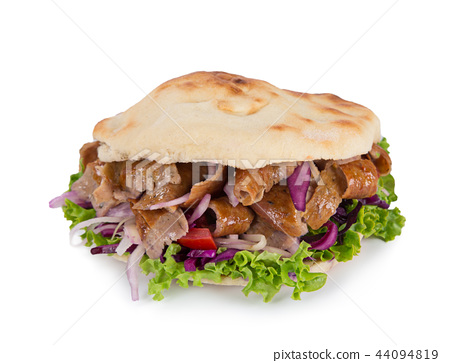

Turkish Doner Kebab

Recipe for an authentic Turkish Doner Kebab
This is one of my go to munches when nothing else can satisfy the hunger.
Maybe it's because I love meat so much in general but a good bit of lamb
when cooked right is *chefs kiss* delicious.
This should be a relatively easy recipe which is a bonus.
For those of you who love getting take-out, try this take out at home
and you will not regret it
Ingredients
- 1 teaspoon all-purpose flour
- 1 teaspoon dried oregano
- 1/2 teaspoon salt
- 1/2 teaspoon garlic powder
- 1/2 teaspoon onion powder
- 1/2 teaspoon dried Italian herb seasoning
- 1/4 teaspoon ground black pepper
- 1/4 teaspoon cayenne pepper
- 1 1/4 pounds ground lamb
Cooking Steps
- Preheat the oven to 350 degrees F (175 degrees C).
- Combine flour, oregano, salt, garlic powder, onion powder,
Italian seasoning, black pepper, and cayenne pepper in a large bowl.
Add ground lamb and knead until thoroughly mixed together, about 3 minutes.
- Shape seasoned lamb mixture and place into a loaf pan; set on top of a baking sheet.
- Bake in the preheated oven, turning halfway to ensure even browning,
for about 1 hour and 20 minutes.
- Wrap loaf in aluminum foil and let rest for about 10 minutes.
Slice as thinly as possible to make doner kebab pieces.
Source of recipe